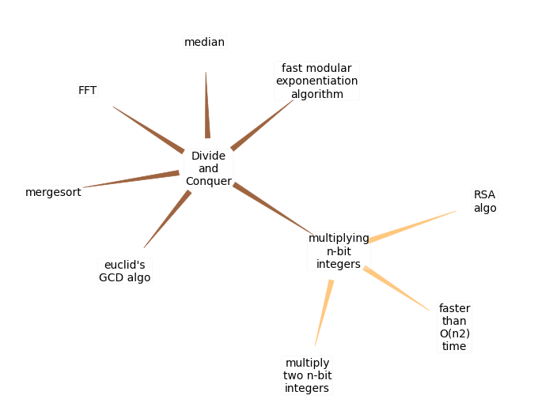
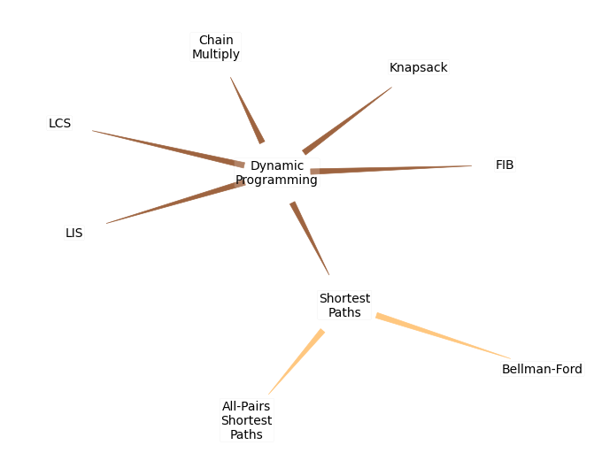

Graph visualization of algorithms to understand interrelations#
Frequently used algorithms and their properties are represented as graphs to understand how they are connected to each other.
Initial setup to create graphs#
import matplotlib.pyplot as plt
import numpy as np
# from scipy.interpolate import make_interp_spline
import pandas as pd
# from IPython.display import IFrame
import networkx as nx
import pydot
import pylab
from networkx.drawing.nx_pydot import graphviz_layout
import warnings
warnings.filterwarnings("ignore", category=DeprecationWarning)
import textwrap
if 'global_nodes' not in globals():
global global_nodes
global_nodes = {1: "Divide\nand\nConquer", 2: "Dynamic\nProgramming"}
def create_and_plot_graph(nodes, edges, figsize=(15,8), export_filename=None, save_data=False, add_to_global=False):
# # Wrap node labels to fit in graph nodes - replace all space with \n
for key, value in nodes.items():
nodes[key] = textwrap.fill(
value, width=round(np.sqrt(len(value))*2), initial_indent='', subsequent_indent='', expand_tabs=True,
replace_whitespace=True, fix_sentence_endings=False, break_long_words=False,
drop_whitespace=True, break_on_hyphens=False, tabsize=8, max_lines=None, placeholder=' [...]')
# auto generated edges
node_list = list(nodes.keys())
for i in node_list:
j = 10*i + 1
while j in node_list:
edges.append([i, j])
j+=1
# Create graph
T = nx.DiGraph(overlap=False)
# Add edges to graph with color according to node label lengths
node_label_lengths = []
for edge in edges:
T.add_edge(nodes[edge[0]], nodes[edge[1]])
# node_label_lengths.append(min(len(str(edge[0])), len(str(edge[1]))))
node_label_lengths.append(len(str(edge[0])))
cm = pylab.get_cmap('copper')
# colors = [cm(1.*(i-min(node_label_lengths))/max(1,(max(node_label_lengths)-min(node_label_lengths)))) for i in node_label_lengths]
colors = [cm(i/max(node_label_lengths)) for i in node_label_lengths]
plt.figure(figsize=figsize)
# Set graph visualization type
pos = graphviz_layout(T, prog="neato") # dot, twopi, fdp, sfdp, circo, neato
# pos = nx.kamada_kawai_layout(T)
# pos = nx.spring_layout(T)
# Set options
options = {# "edge_color": "#C5C6D0", "font_color": "black", "alpha": 0.5, 'edge_cmap': 'plasma'
"font_size": 10, 'font_color': 'black', "node_shape": "s", "node_color": "None", 'arrowstyle': 'wedge',
"edgecolors": "None", "linewidths": 0.2, "width": 0.5, "node_size": 1500, 'arrowsize':15, "edge_color": colors,
'bbox': dict(facecolor="white", edgecolor='black', boxstyle='round, pad=0.1',linewidth=0.1, alpha=0.2)
}
g = nx.draw(T, pos, with_labels=True, **options)
# Added functionality
if export_filename == None:
plt.show()
else:
plt.savefig(export_filename, dpi=300)
if save_data:
data = {'id':nodes.keys(), 'name':nodes.values()}
nodes_df = pd.DataFrame(data)
nodes_df.to_csv('nodes_df.csv')
data = {'source':[i[0] for i in edges],
'target':[i[1] for i in edges]}
edges_df = pd.DataFrame(data)
edges_df.to_csv('edges_df.csv')
if add_to_global:
# Find the key of value of first node in global
first_value_local = list(nodes.values())[0]
try:
key_match_global = str(list(global_nodes.keys())[list(global_nodes.values()).index(first_value_local)])
# msg = "Added to existing branch in global"
for key, value in nodes.items():
global_nodes[int(key_match_global + str(key)[1:])] = value
except:
print("Did not find existing branch in global to attach")
return None
Divide and Conquer#
#@title Divide and Conquer {vertical-output: true}
nodes = { # write the nodes for graph to a csv file
1: "Divide\nand\nConquer",
11: 'fast modular exponentiation algorithm',
12: "euclid's GCD algo",
13: 'multiplying n-bit integers',
131: 'RSA algo',
132: 'multiply two n-bit integers',
133: 'faster than O(n2) time',
14: 'median',
15: 'FFT',
16: 'mergesort',
}
scale = 0.6
create_and_plot_graph(
nodes, edges=[], figsize=(11*scale,8.5*scale), export_filename="required_skills.pdf", save_data=False,
add_to_global=True)

Dynamic Programming#
#@title Divide and Conquer {vertical-output: true}
nodes = { # write the nodes for graph to a csv file
1: "Dynamic\nProgramming",
11: 'FIB',
12: "LIS",
13: 'LCS',
14: 'Knapsack',
15: 'Chain Multiply',
16: 'Shortest Paths',
161: 'Bellman-Ford',
162: 'All-Pairs Shortest Paths',
}
scale = 0.6
create_and_plot_graph(
nodes, edges=[], figsize=(11*scale,8.5*scale), export_filename="required_skills.pdf", save_data=False,
add_to_global=True)
